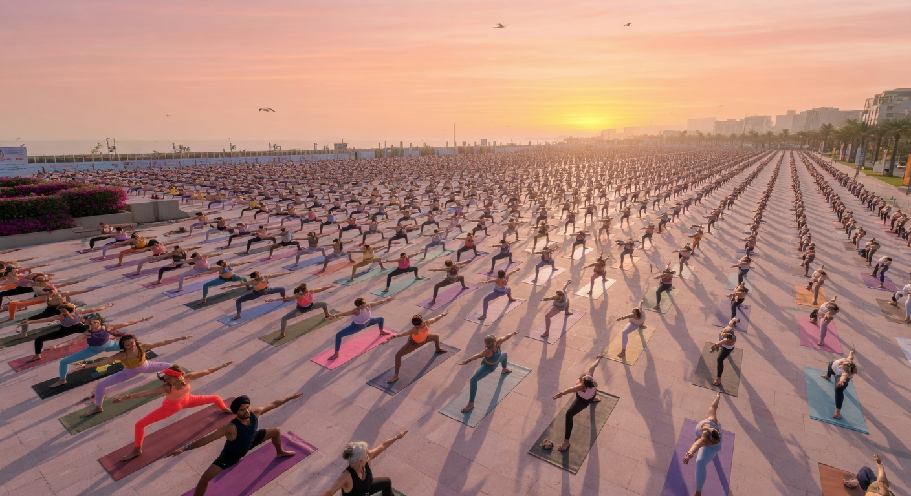
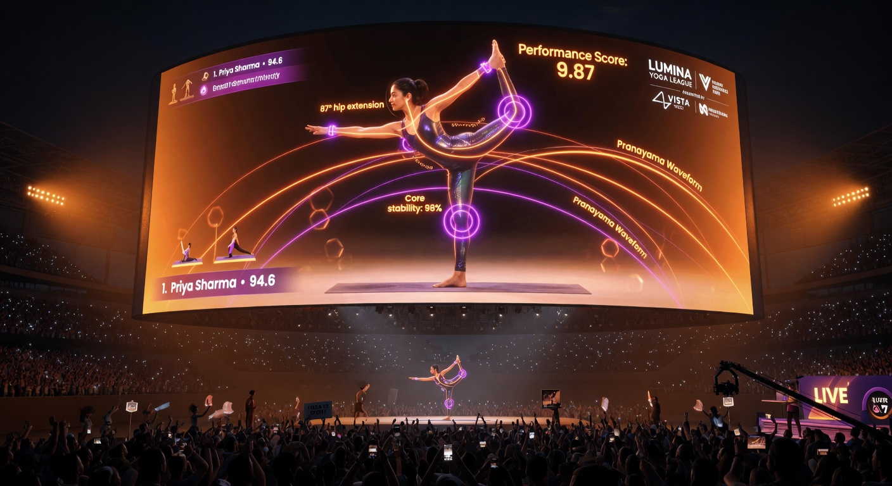
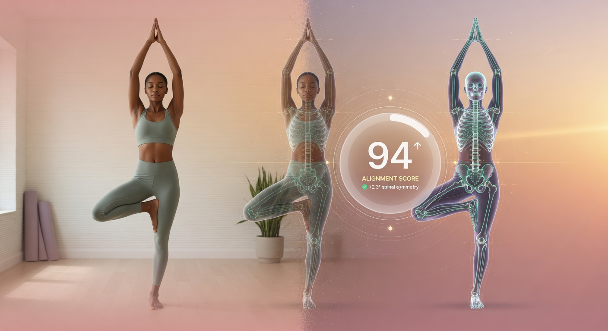
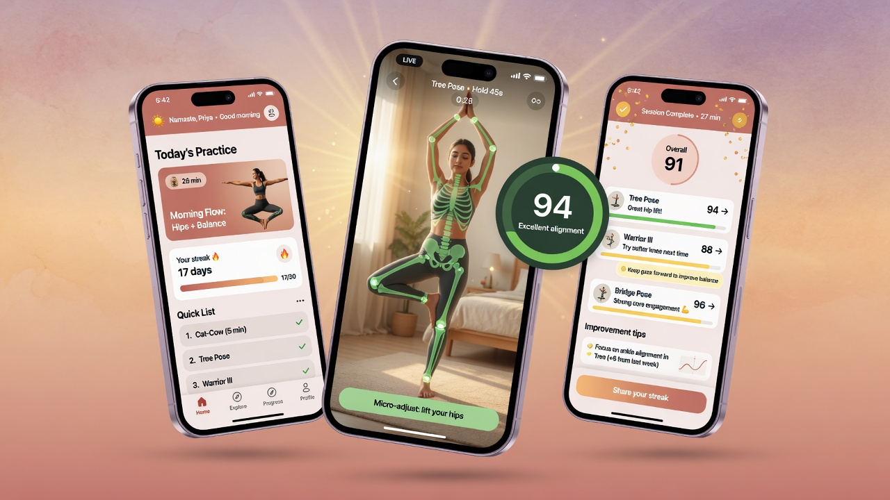
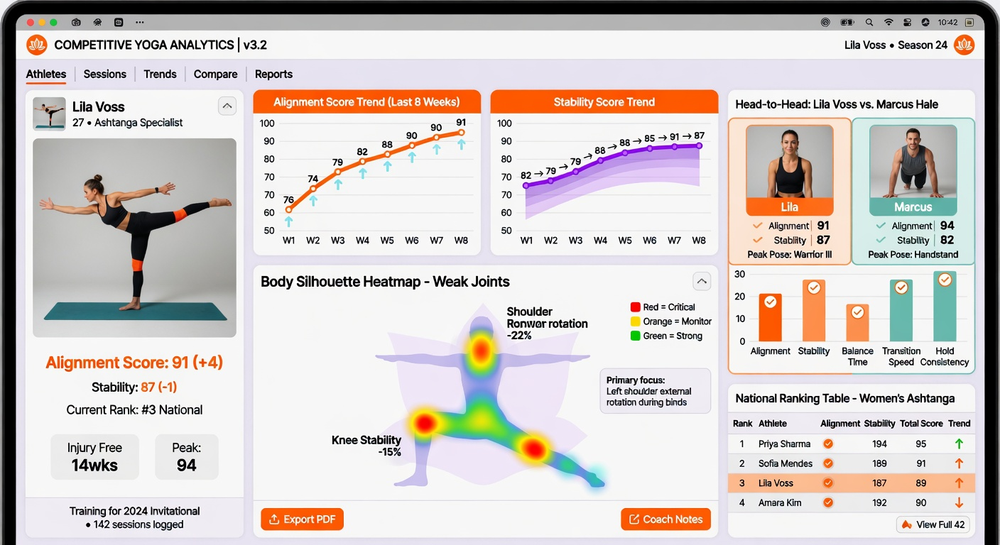
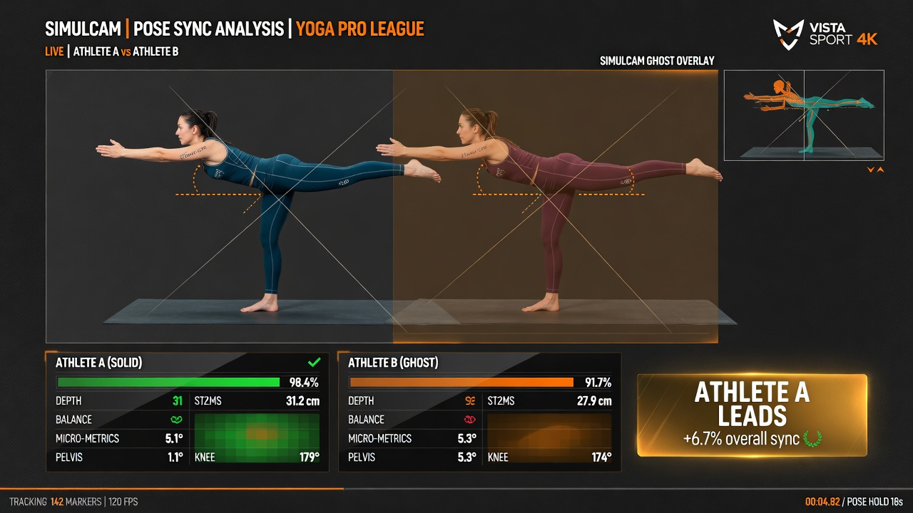
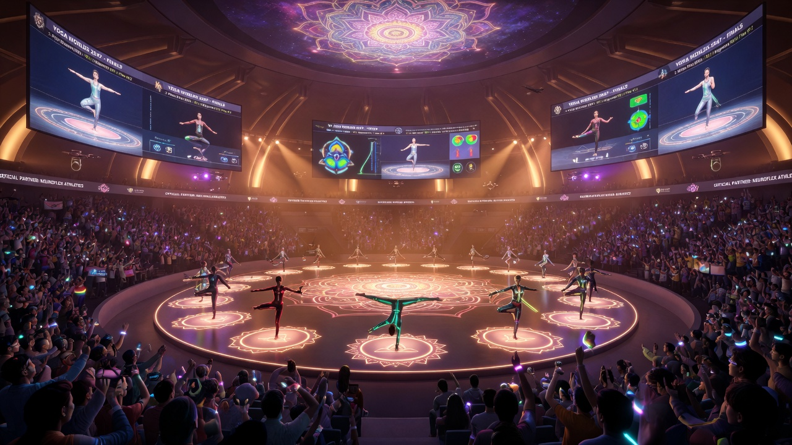

Competitive Yoga · Officiating & Broadcast Technology
Yoga Drishti
Making the world's oldest discipline the world's next spectator sport.
Pilot-readyforza.ventures

The opportunity & the problem
Half a billion people practise yoga. No one can watch it as a sport.
The audience exists — but the precision that makes yoga breathtaking is invisible to a camera, impossible to judge consistently, and never explained to viewers. No "why", no sport.

Why now
Every sport became watchable through one breakthrough. Yoga's just arrived.
Hawk-Eye did it for tennis. DRS for cricket. Markerless 3D pose + AI can now do it for yoga — and we already shipped the hardest piece.

The solution
Yoga Drishti turns every pose into a number everyone can see — and trust.
- Layer A — Scoring support: objective, camera-only measurement that assists referees.
- Layer B — Broadcast & fans: live AR graphics that make the sport legible.
- One principle: the machine suggests, the human judge confirms.

How it works
Six cameras. One 3D skeleton. The truth, in milliseconds.
Synchronised cameras triangulate a true 3D body — no wearables. A fast live tier drives the broadcast; a precise adjudicated tier sets the official score. Just like DRS.

The trust backbone
The AI never overrules a judge. It hands them the evidence.
Measured angles and candidate deductions, each with a confidence. It abstains when unsure. Every override is logged; every score is signed and replayable.

The moment that wins the room
For the first time, the screen tells you exactly why.
Tap any score — see the joint, the angle, the reason: "knee flexed 8° — alignment −0.3." Evidence turns disputes into highlights.
The product · for athletes & coaches
Athletes train with feedback. Coaches develop with data.


Live skeleton scoringAI training plansWeakness heatmapsHead-to-head & rankingsProgress & scouting
The product · officiate, broadcast & play along
One platform for judges, broadcasters and fans.

Referee console — AI suggests, judge confirmsAR broadcast overlaysSimulcam ghost compareFan judge-along & predictions
End-to-end value · who it helps
Built for every role — it grows careers, not just scores.
🧘
Athletes
From living-room to the podium
- Free practice app with real-time feedback
- AI training plans & weakness drills
- Track progress, get ranked & scouted
- Path: amateur → competitor → pro
🎯
Coaches
Develop talent with data
- Weakness heatmaps & score trends
- Head-to-head & benchmarking
- Pre/post-match review & drill plans
- Grow more athletes — and win more
⚖️
Judges
Officiate with confidence
- Evidence-backed, explainable calls
- Faster, more consistent scoring
- Defensible under protest (signed replay)
- Train & certify junior judges
One account, one journey — the platform that scores a world final helps a beginner improve at home.
The opportunity · the size of the prize
A $127B market that has never had a sport.
TAMGlobal yoga market$127B
SAMDigital & competitive yoga~$6B
SOMOur Year-5 capture$25–35M
$127B → $269B
Global yoga market, ~10% CAGR to 2033
~300M
people practise yoga worldwide (est.)
$106B
virtual-fitness tailwind by 2030, ~28% CAGR
Sources: Grand View Research (yoga market; virtual fitness). SOM is bottom-up from unit economics — under 1% of SAM.
Why now · proven precedents
Officiating is being automated. Competition is going digital. We sit at the intersection.
Tennis
300 → 0 judges
Hawk-Eye replaced all human line judges at Wimbledon 2025 (after AO '21, USO '22). Officiating is going AI.
Gymnastics
Olympic-grade
FIG adopted Fujitsu AI + LiDAR judging for a subjective, pose-based sport — the direct analog to scoring an asana.
Esports
$2.5B → $7.5B
~23% CAGR, 611M fans — proof a non-traditional sport can build a global competitive economy.
AR/VR in sports ~30% CAGR
Virtual fitness ~28% CAGR
6 revenue streams: licences · SaaS · fan/sponsor · app · data · services
Sources: CNN/Wimbledon (electronic line-calling, 2025); IEEE Spectrum (Fujitsu/FIG AI judging); Grand View Research (esports; AR/VR in sports; virtual fitness).
Why us · and the proof
The data and audience no one else can get — and it's live today.
- Consumer practice app → pose-labelled data → better models ↻
- Surfaces competition-ready talent; broadcast makes fans → who practise
- Live in production today + a 39k-word hardened spec + a costed Solo pilot


The plan
Earn trust on one mat. Then take it to the world stage.
- Phase 0 — Training mode: build a fair, labelled dataset.
- Phase 1 — Solo pilot: prove latency & auditability on a real feed.
- Phase 2 — Multi-format: Pair, Musical, full dashboard.
- Phase 3 — Group, and the world championship.
The ask
Fund the pilot. Let's make yoga the next sport the world watches.
A fixed-scope Solo pilot that proves on-air latency, officiating latency, and end-to-end auditability — the three things a federation must see before a televised season.
◐ Yoga Drishtiforza@forza.ventures